| 日付 | 2011年12月25日（日） |
|---|---|
| 山域 | 房総 |
| メンバー | 家族（妻、長女・0歳） |
| 山行形態 | 子連れ日帰り |
| アクセス | 車 |
| ルート (Map) | 鋸山登山口駐車場→日本寺表参道→十州一覧台→鋸山登山口駐車場 |
前回の山では雪で苦しめられたので、今回は絶対に雪のない鋸山に行ってみる。
以前鋸山に行ったことがあるが、そのときは鋸山の観光名所を巡らなかった。
今回は前回行けなかった日本寺境内の中を散策することにする。
9:31 鋸山登山口駐車場到着。標高5m。
海のすぐそばにある眺めの良い駐車場だ。
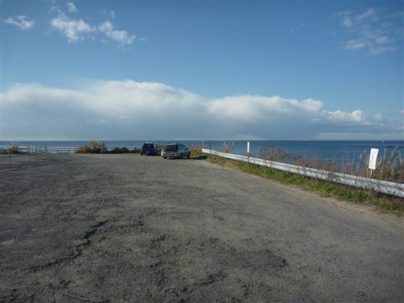
鋸山の稜線が見えている。上に建っている白い建物はロープウェイの山頂駅だ。

鋸山は山頂部が日本寺の境内になっている。日本寺の表参道を辿って山頂を目指す。
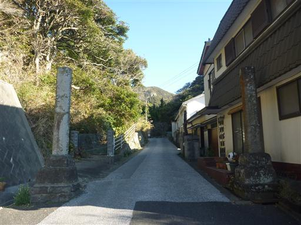
山頂まではロープウェイが通じていて、車でも上の方まで行けるため、
この表参道には人影がほとんどない。
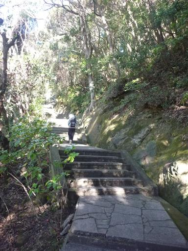
蝸牛石。特に形が似ているとは思わないが、命名の由来は不明。
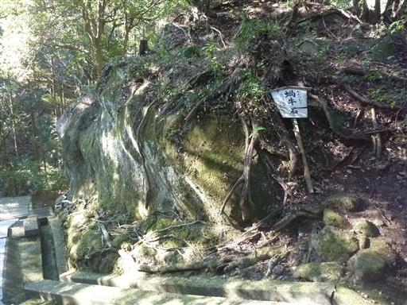
弘法井。弘法大師が手で掘った井戸だそうだ。

この辺りの庭はよく整備されている。花が咲く季節だと人で賑わうのだろうか？
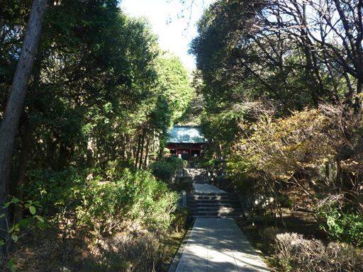
仁王門に到着。
採石が行われて稜線が鋸歯状に見えることから鋸山と呼ばれているが、
乾坤山がこの山の正式名称だ。
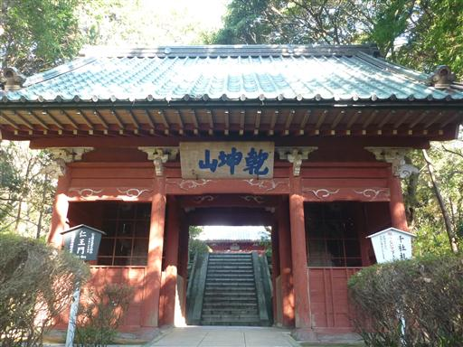
仁王門の金剛力士像。迫力ある姿だ。

仁王門をくぐると、観音堂が建っている。ここから先は拝観料600円が必要だ。
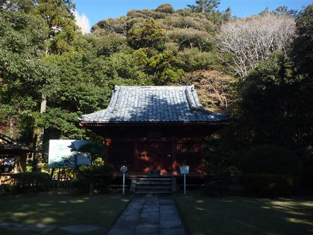
心字池。紅葉はほとんど終わっているが、美しい庭だ。

池にかかっている石橋は古くて崩れ落ちそうだ。もちろん渡ることはできない。
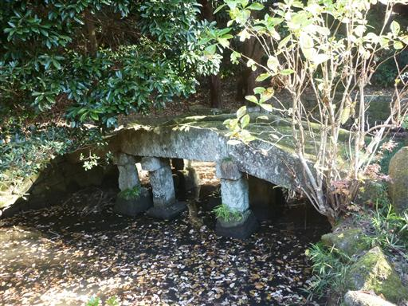
茶屋 呑海楼。人気は全くないが、来る客はいるのだろうか？
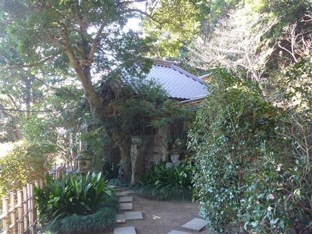
店の側には、いびつな形の古そうな灯篭が置かれている。
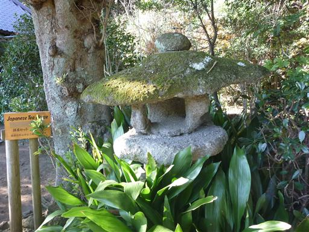
しばらく登ると開けた広場に出てきて、目の前に鋸山の稜線が見えてくる。
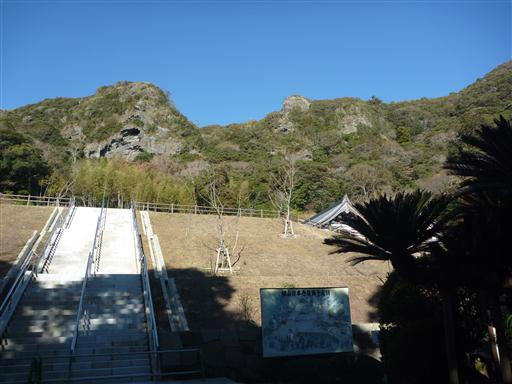
日本寺は広い境内の中に様々な建物が立っているが、肝心の本堂と周辺の建物は焼失している。
1939年の登山者の過失による山火事が原因らしい。
高い拝観料は日本寺の復興のために使われるのだろう。
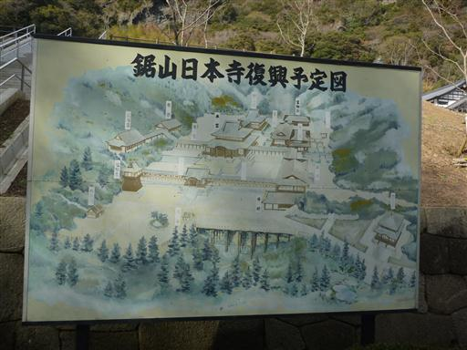
鐘が置かれているが突くことは禁止されていた。
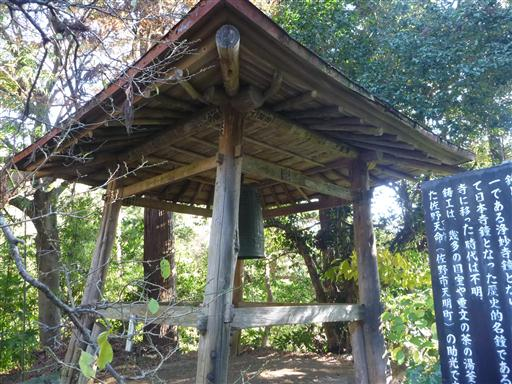
四方竹。断面が四角の形をしている竹らしい。
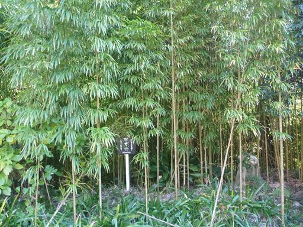
まだ12月なのに、道端にスイセンの花が咲いている。
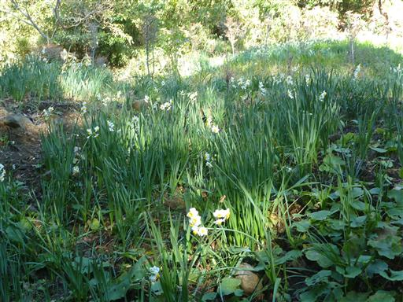
日本寺大仏。高さ31mの石仏で奈良の大仏よりも大きい。
パンフレットによると日本一大きな大仏らしいが、少なくとも牛久大仏よりは小さい。

お願い地蔵。願い事が書かれた小さな地蔵が積み重なっている
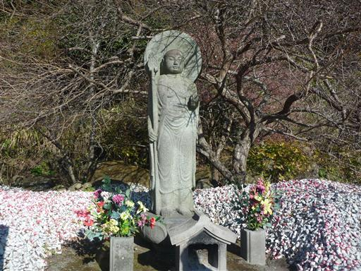
千五百羅漢。岩窟に石仏がたくさん並んでいる。
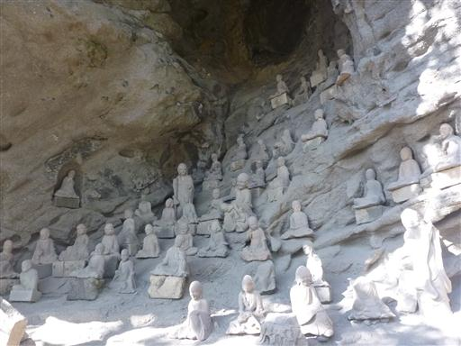
維摩窟。老人の石仏が置かれている。
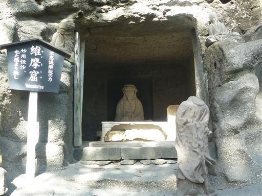
道端の岩窟にどこまでもどこまでも羅漢像が並んでいる。本当に1500くらいの数がありそうだ。
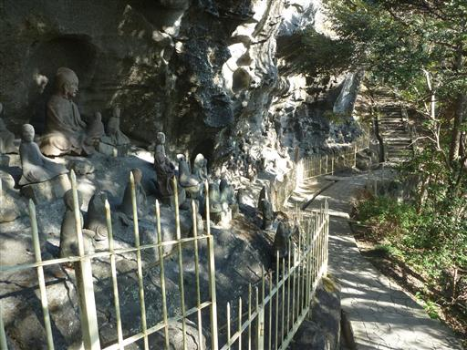
低い山だが道のアップダウンがあるので、
見どころを見て回っていると結構疲れる。
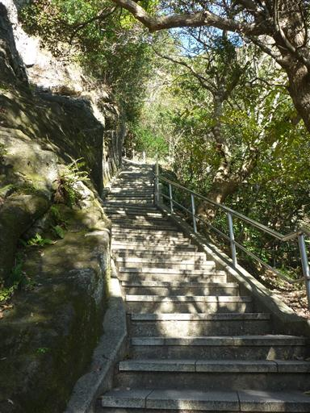
この辺りの岩は柔らかくて掘りやすいのか、トンネルになっているところが多い。
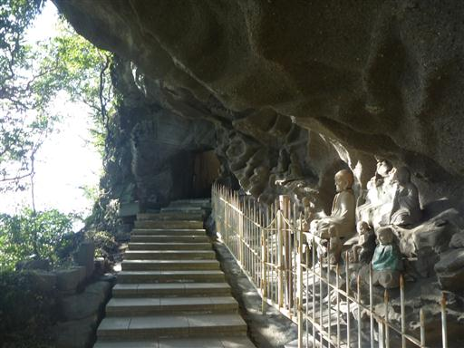
ザックが大きいとくぐるのが大変だ。
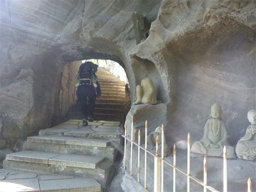
宝篋印塔。美しい形の塔だ。
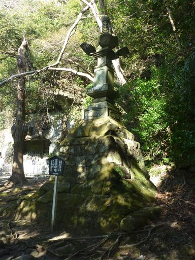
ほとんどの道は整備された階段だが、
わずかに自然を感じられる道が残されている。
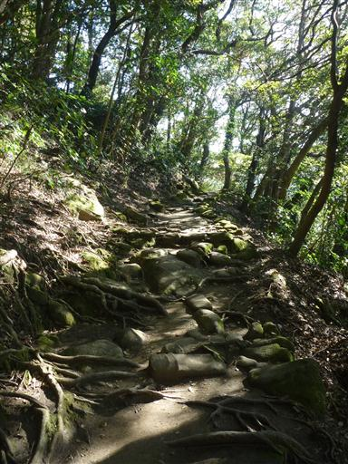
あせかき不動。赤と青の目をした何やら怖そうな像だ。
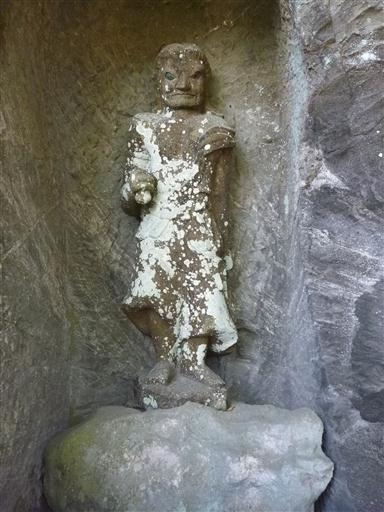
百躰観音。このあたりの像は背が高くて立派だ。
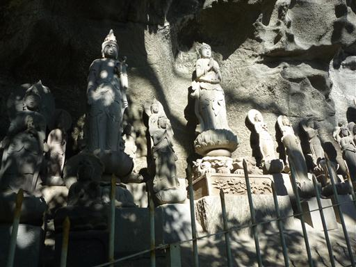
山頂まで最後の急な石段を登っていく。
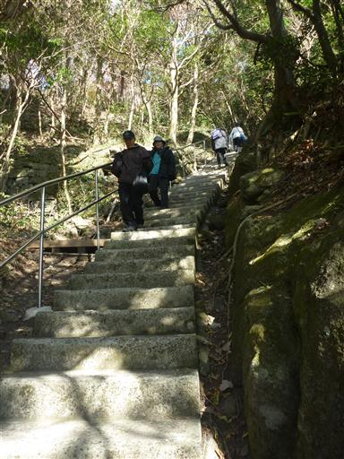
暖かい地域なので、南国っぽい植物が生えている。
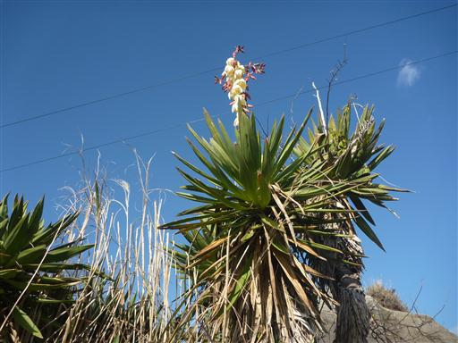
稜線に到達すると一気に展望が広がる。眼下には青い海と金谷港。対岸には三浦半島が見える。
富士山も見えるはずなのだが、残念ながら雲がかかっていて裾野しか見えない。
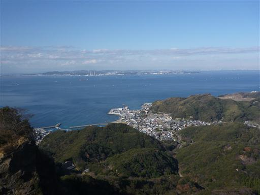
こちらは房総半島の展望。低い山々がどこまでも続いている。
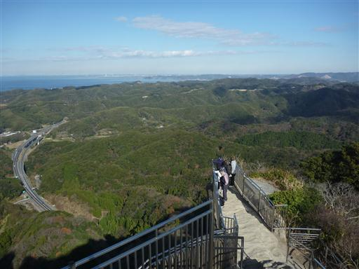
鋸山の稜線。三角点のある本当の山頂は、この先にある。
山頂は日本寺境内の外だ。
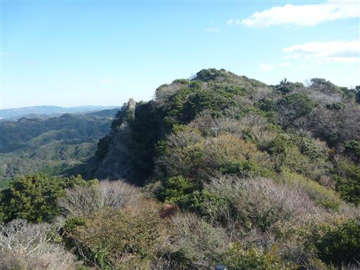
この山の石は石材として切り出されたため、展望台の先は崖が切れ落ちている。
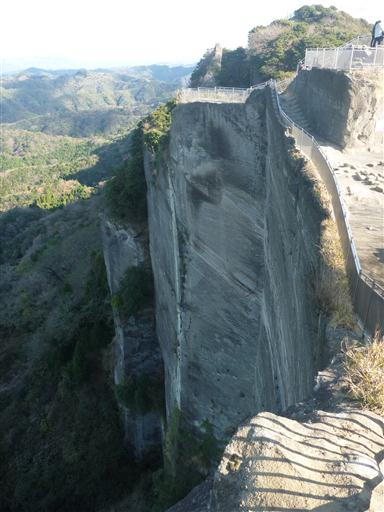
地獄のぞき。崖から突き出た岩の上に立つことができる。
横から見たら怖そうに見える場所だが、実際はさほど高度感がない。
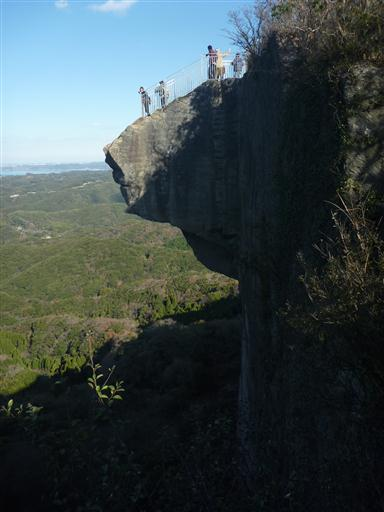
崖の下に降りて、石と石の間を歩いていく。
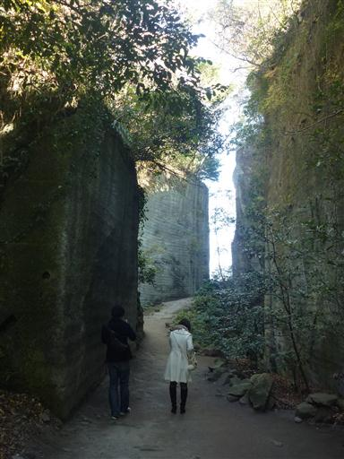
百尺観音。石壁に掘られた像で30mの高さがある。
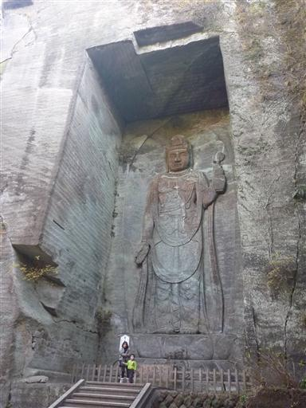
下から地獄のぞきを見上げる。どうしてあのような形になったのか不思議だ。
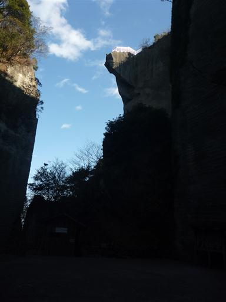
十州一覧台。先ほどの展望台とさほど展望は変わらないが、ここも美しい展望が広がる。
ここで昼食をとることにする。
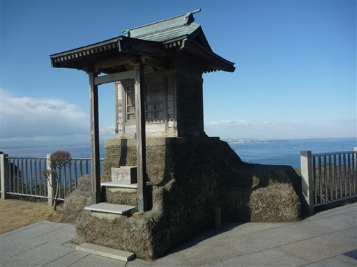
房総半島南方の展望。一番高く聳えている山は富山だ。
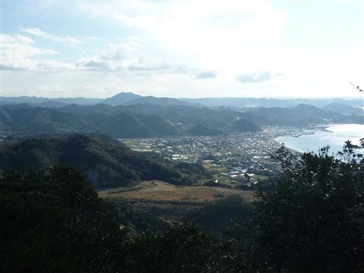
以前何度かお世話になったフェリーが浮かんでいる。
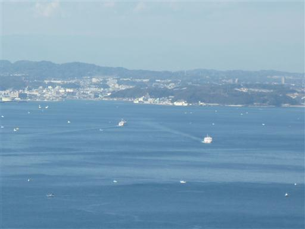
昼食をとったら下山するのみ。低い山なので寄り道しなければ一瞬で下山だ。
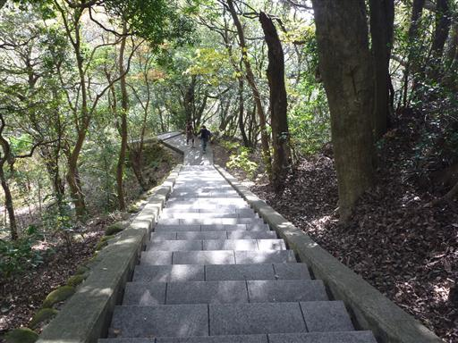
12:55 鋸山登山口駐車場到着。
海岸に降りて少し海と戯れる。
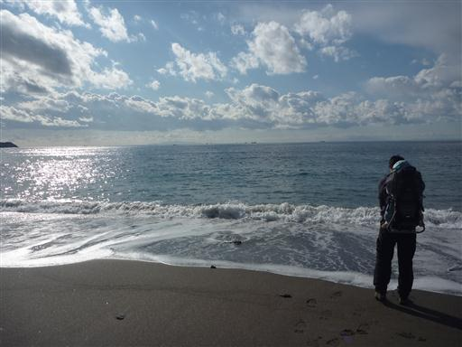
午前中は晴れていたのに、午後になって黒い雲が出てきた。雲が海と接しそうなほど低い。
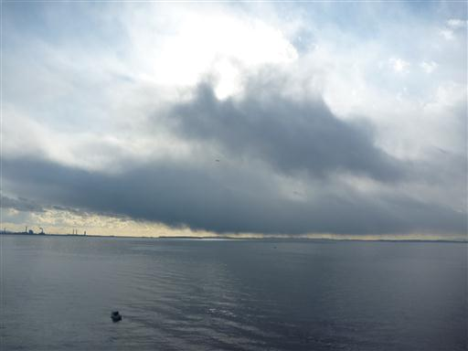
帰りは東京アクアラインの海ほたるに寄って帰る。
普段は料金が高いアクアラインだが現在は値引中だ。
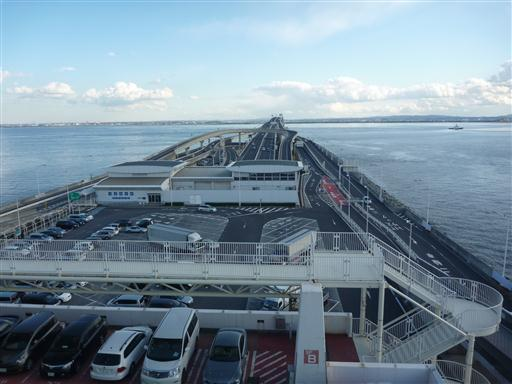
風の塔。東京アクアラインのトンネル部の換気施設だ。
海の上なので風が強く非常に寒い。観光を程々に切り上げて帰路につく。